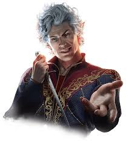
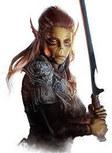
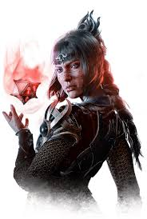
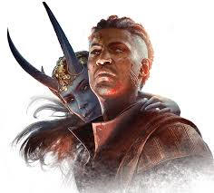
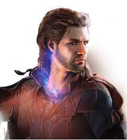

Astarion - O Vampiro Atormentado:
Astarion, um vampiro meio-elfo, é uma figura complexa e sedutora em Baldur's Gate 3. Uma vez escravo de sua própria sede de sangue, ele agora luta para controlar seus instintos predatórios enquanto busca libertar-se das correntes de sua condição vampírica. Com uma mistura de charme e escuridão, Astarion oferece um olhar intrigante sobre os dilemas morais e a dualidade da natureza humana.
|
 |
Lae'zel - A Guerreira Githyanki Determinada:
Lae'zel é uma guerreira githyanki feroz e destemida, em uma missão de importância vital para sua raça. Determinada e orgulhosa, ela carrega consigo um senso de propósito inabalável enquanto luta contra seus inimigos e desafios. Através de sua jornada, Lae'zel revela camadas de sua personalidade, mostrando-se como uma aliada leal, mas também confrontando as complexidades de suas próprias crenças e preconceitos.
|
 |
Shadowheart - A Clériga Misteriosa:
Shadowheart é uma clériga enigmática, envolta em segredos e mistérios sombrios. Portadora de uma missão sagrada que a coloca em rota de colisão com forças sombrias e divinas, ela luta com sua fé enquanto enfrenta desafios tanto físicos quanto espirituais. Com uma aura de mistério e uma determinação implacável, Shadowheart se destaca como uma figura intrigante em Baldur's Gate 3. |
 |
| Wyll - O Guerreiro com Pacto Infernal:
Wyll é um guerreiro marcado por um pacto infernal que o assombra constantemente. Determinado a redimir-se de seus erros passados e das consequências sombrias de seu pacto demoníaco, ele luta para encontrar um equilíbrio entre sua busca por redenção e sua sede de vingança. Com uma determinação feroz e uma alma atormentada, Wyll representa os desafios de resistir às tentações do poder obscuro e encontrar redenção em um mundo repleto de perigos. |
 |
| Gale - O Feiticeiro Destruído pelo Poder:
Gale é um feiticeiro cujo poder arcano é apenas igualado por sua amargura e desespero. Atormentado por uma maldição que o consome lentamente, ele busca desesperadamente por uma cura enquanto lida com os altos custos de sua busca pelo conhecimento mágico. Com um intelecto afiado e uma alma atormentada, Gale oferece uma perspectiva sombria sobre os perigos do poder desenfreado e das escolhas difíceis que acompanham o domínio da magia. |
 |